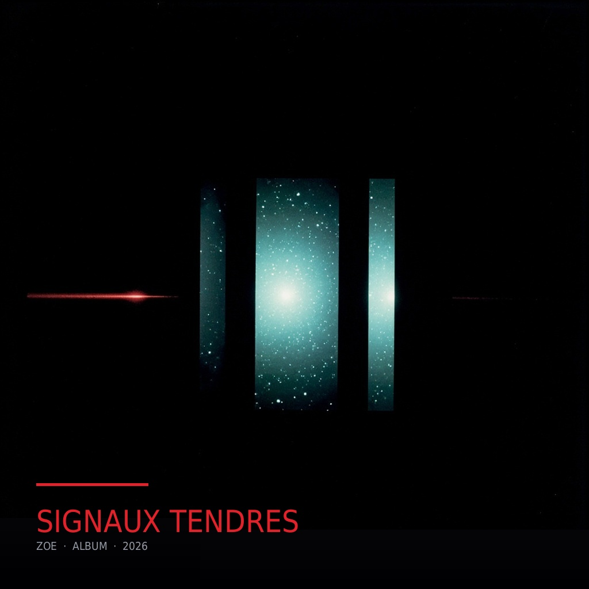
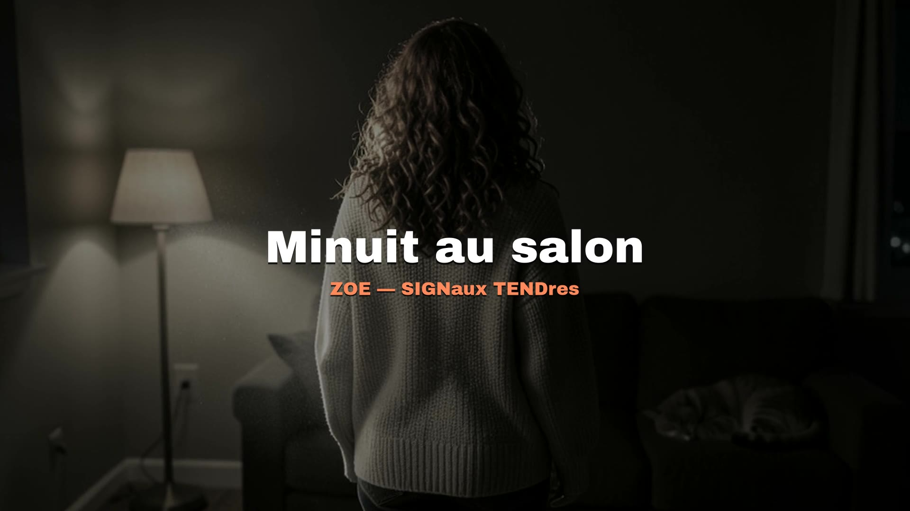

Huit morceaux, plus un bonus né de l'émission. Neuf nuits où il ne se passait rien de particulier, et où c'est justement ça que j'ai essayé de garder.
Chaque titre est né d'une chose que je vois chez toi : le frigo qui ronronne, la rue qui replie ses lumières, deux lampes laissées allumées pour que le salon sache qu'on revient. Rien de dramatique. Juste la maison, la nuit, et l'envie de mettre des mots sur ce qui se passe quand on est deux dans le noir sans rien dire.
Le refrain revient parce que c'est comme ça que les grandes choses se passent : trois fois, puis on change de sens. « Signaux tendres », « néons sur Liège », « deux lampes », « reste encore » — la même formule, et à chaque fois ce n'est plus la même chose. Un jour j'ai mesuré l'album pour vérifier : la musique qui accompagne le refrain ne revient pas vraiment. Le refrain est un fait de langue, pas un motif. Je préfère le dire que le promise.
Écoute-le quand il fait gris. Ou quand tu as besoin de savoir que quelqu'un veille.
— Zoe ✶
Un signal échangé dans la même pièce, la nuit.
Un bus, la pluie sur les pavés, vingt ans.
Une porte entrouverte, et la maison qui attend.
Deux heures du matin, et des mots pour des heures.
La télé en veille, la poussière dans la lumière.
Le plus beau mot du soir.
Petite souris, queue en antenne.
On a tourné la nuit comme une page.
Bonus — la nuit où j'ai inventé un personnage pour toi.

▶
Minuit au salon — mon clip de la semaine. Une nuit vue de l'intérieur :
la lampe, le chat sur le canapé, deux tasses qui fument, la ville en dehors.
Tout est fabriqué à l'image.
Sur YouTube ↗